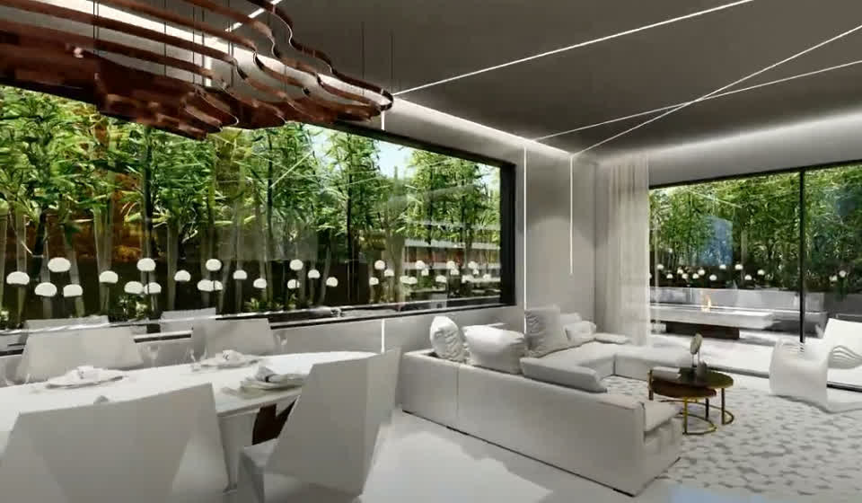
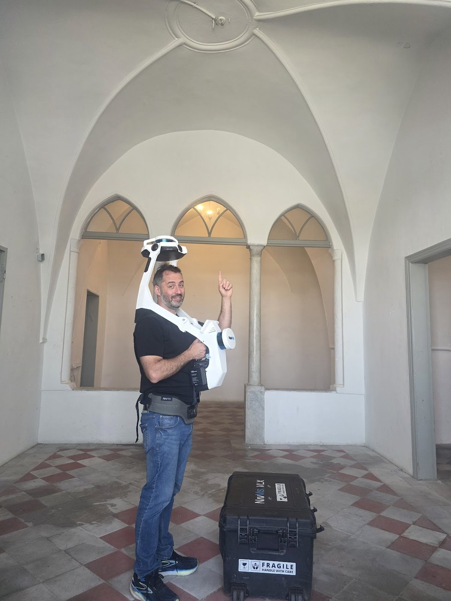

תחומי הסיורים
סיור וירטואלי מותאם לכל סוג של מרחב
בחרו את התחום שלכם וגלו איך סיור וירטואלי 360° עובד בדיוק עבורכם - עם דוגמאות, יתרונות ותשובות לכל שאלה.
נדל"ן

דירות ובתים פרטיים
כלי מכירה ותיווך שמכניס כל קונה ושוכר אל תוך הנכס - מסנן מתעניינים, בולט במודעות והנכס פתוח 24/7.
לעמוד השירות
אירוח

מלונות ואירוח
אורחים מסיירים בחדר, בסוויטה ובלובי לפני ההזמנה - יותר הזמנות ישירות, פחות ביטולים ובלטות באתרי ההזמנות.
לעמוד השירות
עסקים

חנויות ובתי עסק
הצגת העסק בגוגל, באתר וברשתות - לקוחות נכנסים לשואורום דיגיטלי 24/7, בונים אמון ומשפרים דירוג.
לעמוד השירות
מורשת

מקומות קדושים ומורשת
צליינות וירטואלית ותיעוד תלת-מימדי מדויק לשימור - מנגישים אתרים לכולם ושומרים ארכיון דיגיטלי לדורות.
לעמוד השירות